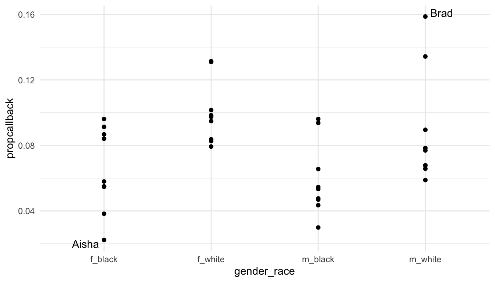
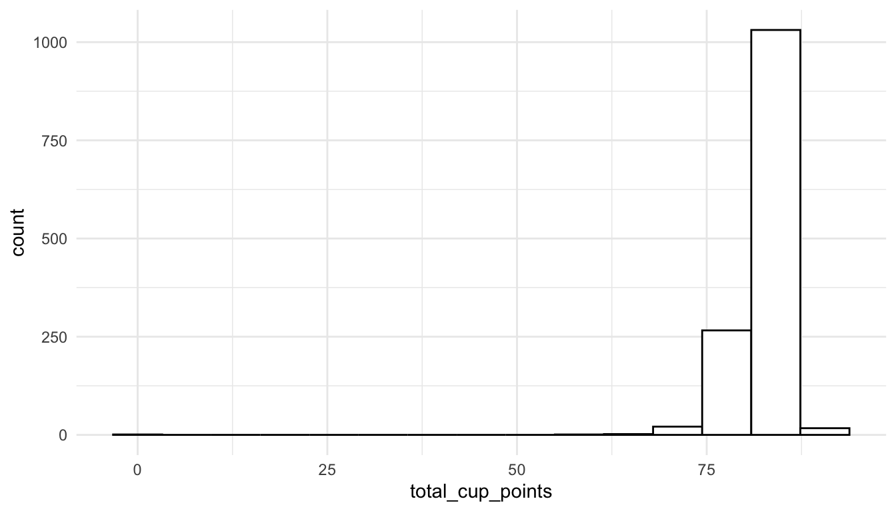

library(openintro)
resume
#> # A tibble: 4,870 × 30
#> job_ad_id job_city job_industry job_type job_fed_contractor
#> <dbl> <chr> <chr> <chr> <dbl>
#> 1 384 Chicago manufacturing supervisor NA
#> 2 384 Chicago manufacturing supervisor NA
#> 3 384 Chicago manufacturing supervisor NA
#> 4 384 Chicago manufacturing supervisor NA
#> 5 385 Chicago other_service secretary 0
#> 6 386 Chicago wholesale_and_retail_trade sales_rep 0
#> # ℹ 4,864 more rows
#> # ℹ 25 more variables: job_equal_opp_employer <dbl>, job_ownership <chr>,
#> # job_req_any <dbl>, job_req_communication <dbl>, job_req_education <dbl>,
#> # job_req_min_experience <chr>, job_req_computer <dbl>,
#> # job_req_organization <dbl>, job_req_school <chr>,
#> # received_callback <dbl>, firstname <chr>, race <chr>, gender <chr>,
#> # years_college <int>, college_degree <dbl>, honors <int>, …15 Connections to STAT 113, STAT 213, and CS 140
The structure of this section than the structure of most other sections. In this section, you’ll relate some of what we have learned in this course to what you have learned in at least one other course here (STAT 113, STAT 213, or CS 140).
15.1 STAT 113
In this section, we discuss how what we have learned in this data science course connects to some concepts that you learned about in STAT 113. As a quick refresher, a few concepts that you learned about in STAT 113 are:
- exploring data through numerical and graphical summaries. The connection to what we have been doing in this class is fairly straightforward: we’ve learned a lot about how to actually compute those numerical summaries and make appropriate graphics for potentially messy data.
- explaining what sampling distributions are and how they relate to confidence intervals and hypothesis tests. This topic is probably the least connected to what we have learned so far in this class.
- conducting hypothesis tests and creating confidence intervals to answer questions of interest. We will focus on this third general objective in this section.
The example we will use is an experiment designed to assess the effects of race and sex on whether or not an employee received a callback for a job. In order to conduct the experiment, researchers randomly assigned names to resumes with each name associated with a particular race and gender, sent the resumes to employers, and recorded whether or not the resume received a callback. In addition to race, sex, and whether or not an employee received a callback, a few more variables were collected, like resume quality, whether or not the applicant had computer skills, years of experience, etc. A 1 for the received_callback indicates that the applicant received a callback.
Note
You may recall this example from STAT 113: we used it to introduce a chi-square test of association. In that example and others like it, an appropriate graphic and summary statistics were provided. Here, we create these ourselves.
The data set is called resume in the openintro package: you’ll need to install this package with install.packages("openintro"). Then, load in the data with
15.1.1 Chi-square Test of Association
Our goal is to assess whether there is evidence of racial discrimination in the study. In other words, are the variables race and received_callback associated?
Prepare. Let’s start by writing the null and alternative hypotheses.
\(H_0:\) There is no association between race and received_callback.
\(H_a:\) There is an association between race and received_callback.
Next, we can construct a summary graphic. One graphic to explore two categorical variables is a stacked bar plot.
library(tidyverse)
resume_sum <- resume |>
mutate(received_callback = received_callback) |>
group_by(race, received_callback) |>
summarise(count = n())
ggplot(data = resume_sum, aes(x = race, y = count)) +
geom_col(aes(fill = received_callback)) +
scale_fill_viridis_c()
What do you notice about the recieved_callback variable scale? How could we fix that?
resume <- resume |>
mutate(received_callback = as.factor(received_callback))
resume_sum <- resume |>
group_by(race, received_callback) |>
summarise(count = n())
ggplot(data = resume_sum, aes(x = race, y = count)) +
geom_col(aes(fill = received_callback)) +
scale_fill_viridis_d()We might also want to generate a two-way table:
resume |> group_by(race, received_callback) |>
summarise(count = n()) |>
pivot_wider(names_from = race,
values_from = count)
#> # A tibble: 2 × 3
#> received_callback black white
#> <fct> <int> <int>
#> 1 0 2278 2200
#> 2 1 157 235Check: The two assumptions for the test are independence of observations and that all expected counts are larger than 5. We don’t have time to discuss these in detail but we will assume that they are satisfied here.
Calculate: We next want to calculate a p-value for the hypothesis test. The core tidyverse packages do not offer functionality for hypothesis testing. Instead, there are some functions in base R that perform the various tests. You may have used the lm() function in STAT 213 to perform hypothesis testing in the regression context. t.test() and chisq.test() are a couple of other functions that can perform a one and two-sample t-test (t.test()) or a chi-square goodness-of-fit test and chi-square test of association chisq.test(). The arguments to chisq.test() for a test of association are two vectors. Because the arguments are not data.frames, we need to specify the appropriate vectors directly with resume$race and resume$received_callback.
chisq.test(x = resume$race, y = resume$received_callback)
#>
#> Pearson's Chi-squared test with Yates' continuity correction
#>
#> data: resume$race and resume$received_callback
#> X-squared = 16.449, df = 1, p-value = 4.998e-05The output of chisq.test() gives a p-value of 0.00004998 with a chi-square statistic of 16.449 and 1 degree of freedom.
Conclude. Finally, we write a conclusion in context of the problem.
There is strong evidence that race and callback are associated (p-value = 0.00004998). The graph shows that white applicants receive a callback more often than black applicants do and the hypothesis test shows that this is statistically significant.
15.1.2 Additional Analysis
In addition to carrying out the steps of a statistical hypothesis test, we can also use the skills we have learned in this course to provide further information about the study. Some questions we might answer include:
what is the distribution of job types
job_typeand job industriesjob_industryin the study?do some of the first names (
firstname) used have more bias than other first names?what other variables are associated with whether or not the applicant received a callback?
To answer the question about the distribution of job types and job industries used in the study, we can make a simple bar plot:
ggplot(data = resume, aes(x = fct_rev(fct_infreq(job_type)))) +
geom_bar() +
coord_flip() +
labs(x = "Job Type")In the code, fct_infreq() orders the levels of job_type from the highest count/frequency to the lowest. fct_rev() reverses the order so that, on the resulting bar plot, the level with the highest count appears first.
ggplot(data = resume, aes(x = fct_rev(fct_infreq(job_industry)))) +
geom_bar() +
coord_flip() +
labs(x = "Job Industry")
To answer the question about whether some first names are more biased than others, we might make a graph of the proportion of resumes that received a callback for each first name.
resume_firstname <- resume |>
group_by(firstname) |>
summarise(propcallback = mean(received_callback == "1"),
gender = unique(gender),
race = unique(race)) |>
arrange(desc(propcallback)) |>
unite("gender_race", c(gender, race))
ggplot(data = resume_firstname, aes(x = gender_race, y = propcallback)) +
geom_point()We can the label the name with the lowest callback rate and the name with the highest callback rate.
library(ggrepel)
label_df <- resume_firstname |>
filter(propcallback == max(propcallback) |
propcallback == min(propcallback))
ggplot(data = resume_firstname, aes(x = gender_race, y = propcallback)) +
geom_point() +
geom_text_repel(data = label_df, aes(label = firstname))
Exercise 1. Construct a graphic or make a table that explores whether one of the other variables in the data set is associated with whether the applicant receives a callback for the job. Other variables include gender, years_college, college_degree, honors, worked_during_school, years_experience, computer_skills, special_skills, volunteer, military, employment_holes, and resume_quality.
Exercise 2. Construct a graphic or make a table that explores one of the other variables in the data set is associated with whether the applicant receives a callback for the job. If your variable in Exercise 1 was categorical, choose a quantitative variable for this exercise. If your variable in Exercise 1 was quantitative, choose a categorical variable for this exercise.
Exercise 3. For the categorical variable that you chose, conduct a Chi-square test of association to see if there is statistical evidence that the variable is associated with received_callback. In your test, (a), write the null and alternative hypotheses, run the test in chisq.test() and make a note of whether or not you get a warning about assumptions for the test, and write a conclusion in context of the problem.
Exercise 4. Write a short, one paragraph summary on your major take-aways from this section.
15.2 STAT 213
Much of the same concepts in connecting STAT 113 to this course hold for connecting STAT 213 with this course. We can still use what we have learned to explore a data set, conduct a hypothesis test, and perform further analysis and exploration on the data set.
For this section, however, we will focus more on a tidy approach to modeling. In particular, we will use the broom package to return tibbles with model summary information that we can then use for further analysis, plotting, or presentation.
We will use the coffee_ratings data set, which contains observations on ratings of various coffees throughout the world. The data was obtained from the Github account (https://github.com/rfordatascience/tidytuesday/blob/master/data/2020/2020-07-07/readme.md).
A description of each variable in the data set is given below.
-
total_cup_points, the score of the coffee by a panel of experts (our response variable for this section) -
species, the species of the coffee bean (Arabica or Robusta) -
aroma, aroma (smell) grade -
flavor, flavor grade -
aftertaste, aftertaste grade -
acidity, acidity grade -
body, body grade -
balance, balance grade -
uniformity, uniformity grade -
clean_cup, clean cup grade -
sweetness, sweetness grade -
moisture, moisture grade -
category_one_defects, count of category one defects -
quakers, quakers -
category_two_defects, the number of category two defects
15.2.1 broom Package Functions
The broom package consists of three primary functions: tidy(), glance(), and augment().
tidy() is analagous to summary() for a linear model object. Let’s start by fitting a linear model with lm() with total_cup_points as the response and species, aroma, flavor, sweetness, and moisture as predictors.
Read in the data, load the broom package (and install it with install.packages("broom")), and fit the model with
In STAT 213, you likely used summary() to look at the model output:
summary(coffee_mod)
#>
#> Call:
#> lm(formula = total_cup_points ~ species + aroma + flavor + sweetness +
#> moisture, data = coffee_df)
#>
#> Residuals:
#> Min 1Q Median 3Q Max
#> -9.5132 -0.3705 0.0726 0.5610 5.5844
#>
#> Coefficients:
#> Estimate Std. Error t value Pr(>|t|)
#> (Intercept) 7.04039 0.77377 9.099 < 2e-16 ***
#> speciesRobusta 2.85365 0.26861 10.624 < 2e-16 ***
#> aroma 1.95188 0.14575 13.392 < 2e-16 ***
#> flavor 5.09440 0.14042 36.281 < 2e-16 ***
#> sweetness 2.23956 0.06553 34.173 < 2e-16 ***
#> moisture -1.88033 0.67368 -2.791 0.00533 **
#> ---
#> Signif. codes: 0 '***' 0.001 '**' 0.01 '*' 0.05 '.' 0.1 ' ' 1
#>
#> Residual standard error: 1.168 on 1333 degrees of freedom
#> Multiple R-squared: 0.8891, Adjusted R-squared: 0.8887
#> F-statistic: 2137 on 5 and 1333 DF, p-value: < 2.2e-16However, there are a few inconveniences involving summary(). First, it’s just not that nice to look at: the output isn’t formatted in a way that is easy to look at. Second, it can be challenging to pull items from the summary output with code. For example, if you want to pull the p-value for moisture, you would need to write something like:
summary(coffee_mod)$coefficients["moisture", 4]
#> [1] 0.005327594tidy() is an alternative that puts the model coefficients, standard errors, t-stats, and p-values in a tidy tibble:
tidy(coffee_mod)
#> # A tibble: 6 × 5
#> term estimate std.error statistic p.value
#> <chr> <dbl> <dbl> <dbl> <dbl>
#> 1 (Intercept) 7.04 0.774 9.10 3.23e- 19
#> 2 speciesRobusta 2.85 0.269 10.6 2.31e- 25
#> 3 aroma 1.95 0.146 13.4 1.82e- 38
#> 4 flavor 5.09 0.140 36.3 4.73e-201
#> 5 sweetness 2.24 0.0655 34.2 2.41e-184
#> 6 moisture -1.88 0.674 -2.79 5.33e- 3The advantage of this format of output is that we can now use other tidyverse functions on the output. To pull the p-values,
or, to grab the output for a particular variable of interest:
glance() puts some model summary statistics into a tidy tibble. For example, if we run
glance(coffee_mod)
#> # A tibble: 1 × 12
#> r.squared adj.r.squared sigma statistic p.value df logLik AIC BIC
#> <dbl> <dbl> <dbl> <dbl> <dbl> <dbl> <dbl> <dbl> <dbl>
#> 1 0.889 0.889 1.17 2137. 0 5 -2105. 4224. 4260.
#> # ℹ 3 more variables: deviance <dbl>, df.residual <int>, nobs <int>you should notice a lot of statistics that you are familiar with from STAT 213, including r.squared, adj.r.squared, sigma (the residual standard error), statistic (the overall F-statistic), AIC, and BIC.
augment() is my personal favourite of the three. The function returns a tibble that contains all of the variables used to fit the model appended with commonly used diagnostic statistics like the fitted values (.fitted), cook’s distance (.cooksd), .hat values for leverage, and residuals (.resid).
augment(coffee_mod)
#> # A tibble: 1,339 × 12
#> total_cup_points species aroma flavor sweetness moisture .fitted .resid
#> <dbl> <chr> <dbl> <dbl> <dbl> <dbl> <dbl> <dbl>
#> 1 90.6 Arabica 8.67 8.83 10 0.12 91.1 -0.537
#> 2 89.9 Arabica 8.75 8.67 10 0.12 90.5 -0.538
#> 3 89.8 Arabica 8.42 8.5 10 0 89.2 0.577
#> 4 89 Arabica 8.17 8.58 10 0.11 88.9 0.114
#> 5 88.8 Arabica 8.25 8.5 10 0.12 88.6 0.214
#> 6 88.8 Arabica 8.58 8.42 10 0.11 88.9 -0.0411
#> # ℹ 1,333 more rows
#> # ℹ 4 more variables: .hat <dbl>, .sigma <dbl>, .cooksd <dbl>,
#> # .std.resid <dbl>augment() the data set makes it really easy to do things like:
-
filter()the data set to examine values with high cook’s distance that might be influential
augment_df <- augment(coffee_mod)
augment_df |> filter(.cooksd > 1)
#> # A tibble: 1 × 12
#> total_cup_points species aroma flavor sweetness moisture .fitted .resid
#> <dbl> <chr> <dbl> <dbl> <dbl> <dbl> <dbl> <dbl>
#> 1 0 Arabica 0 0 0 0.12 6.81 -6.81
#> # ℹ 4 more variables: .hat <dbl>, .sigma <dbl>, .cooksd <dbl>,
#> # .std.resid <dbl>We see right away that there is a potentially influential observation with 0 total_cup_points. Examining this variable further, we see that it is probably a data entry error that can be removed from the data.
ggplot(data = coffee_df, aes(x = total_cup_points)) +
geom_histogram(bins = 15, fill = "white", colour = "black")
We could also find observations with high leverage
augment_df |> filter(.hat > 0.2)
#> # A tibble: 2 × 12
#> total_cup_points species aroma flavor sweetness moisture .fitted .resid
#> <dbl> <chr> <dbl> <dbl> <dbl> <dbl> <dbl> <dbl>
#> 1 59.8 Arabica 7.5 6.67 1.33 0.1 58.4 1.38
#> 2 0 Arabica 0 0 0 0.12 6.81 -6.81
#> # ℹ 4 more variables: .hat <dbl>, .sigma <dbl>, .cooksd <dbl>,
#> # .std.resid <dbl>or observations that are outliers:
augment_df |> filter(.std.resid > 3 | .std.resid < -3)
#> # A tibble: 25 × 12
#> total_cup_points species aroma flavor sweetness moisture .fitted .resid
#> <dbl> <chr> <dbl> <dbl> <dbl> <dbl> <dbl> <dbl>
#> 1 82.8 Arabica 8.08 8.17 10 0.12 86.6 -3.85
#> 2 82.4 Arabica 5.08 7.75 10 0.11 78.6 3.79
#> 3 82.3 Arabica 7.75 8.08 6.67 0.11 78.1 4.27
#> 4 80.7 Arabica 7.67 7.5 6.67 0 75.2 5.51
#> 5 80 Arabica 7.58 7.75 10 0 83.7 -3.71
#> 6 79.9 Arabica 7.83 7.67 10 0 83.8 -3.87
#> # ℹ 19 more rows
#> # ℹ 4 more variables: .hat <dbl>, .sigma <dbl>, .cooksd <dbl>,
#> # .std.resid <dbl>Finally, we can use our ggplot2 skills to construct plots like a residuals versus fitted values plot (filtering out the outlying observation first):
ggplot(data = augment_df |> filter(.fitted > 25), aes(x = .fitted, y = .resid)) +
geom_point() 15.2.2 Exploring Concepts
We can also use our data science skills to explore concepts that you may or may not have found difficult in STAT 213. In this section, we will use plotting to help interpret coefficient estimates in models with two quantitative predictors: one with an interaction and one without an interaction.
First, consider a model with flavor and moisture as predictors on the coffee data set that removes the observation with a total_cup_points rating of 0:
\(Y = \beta_0 + \beta_1 flavor + \beta_2 aroma + \epsilon\)
coffee_noout <- coffee_df |> filter(total_cup_points > 0)
coffee_fa <- lm(total_cup_points ~ flavor + aroma,
data = coffee_noout)
coffee_fa |> tidy()
#> # A tibble: 3 × 5
#> term estimate std.error statistic p.value
#> <chr> <dbl> <dbl> <dbl> <dbl>
#> 1 (Intercept) 29.8 1.01 29.6 1.79e-148
#> 2 flavor 5.55 0.177 31.4 1.33e-162
#> 3 aroma 1.39 0.191 7.27 6.11e- 13You might recall that, you can interpret the estimate for \(\hat{\beta}_1\) as something like:
“For a one point increase in flavor grade, we expect average coffee score to increase by 5.55 points, if aroma is held constant.”
(or, if aroma does not change, or if aroma is fixed).
But, what if someone asked you, what does that mean, “if aroma is held constant.” Instead of using words to explain, we can use our ggplot2 skills to construct a plot. The plot that we are going to create is going to show the fitted model for 5 distinct values of aroma: the minimum value, Q1, the median, Q3, and the maximum (though these values can also be chosen arbitrarily). We will make use of the modelr package to gather predictions to make the lines in our plot. First, we are creating a grid of values for predictions:
## install.packages("modelr")
library(modelr)
grid_vals <- coffee_noout |>
modelr::data_grid(
flavor = quantile(flavor),
aroma = quantile(aroma)
)
grid_vals
#> # A tibble: 25 × 2
#> flavor aroma
#> <dbl> <dbl>
#> 1 6.08 5.08
#> 2 6.08 7.42
#> 3 6.08 7.58
#> 4 6.08 7.75
#> 5 6.08 8.75
#> 6 7.33 5.08
#> # ℹ 19 more rowsWe then gather these predictions in a data set, and use that data set to make the lines in our plot. The plot will show total_cup_points on the y-axis, flavor on the x-axis, and have coloured lines for a few different values of aroma that we specified in the grid function:
grid <- grid_vals |>
modelr::gather_predictions(coffee_fa)
grid
#> # A tibble: 25 × 4
#> model flavor aroma pred
#> <chr> <dbl> <dbl> <dbl>
#> 1 coffee_fa 6.08 5.08 70.7
#> 2 coffee_fa 6.08 7.42 73.9
#> 3 coffee_fa 6.08 7.58 74.1
#> 4 coffee_fa 6.08 7.75 74.4
#> 5 coffee_fa 6.08 8.75 75.8
#> 6 coffee_fa 7.33 5.08 77.6
#> # ℹ 19 more rowsggplot(data = coffee_noout, aes(x = flavor, y = total_cup_points)) +
geom_point(alpha = 0.2) +
geom_line(data = grid, aes(colour = fct_rev(factor(aroma)),
y = pred), size = 1.2) +
scale_colour_viridis_d() +
labs(colour = "Aroma") +
theme_minimal()From this model, we might more easily be able to explain that slope interpretation earlier: for a fixed coloured line of aroma, if flavor increases by one point, we expect coffee rating to increase by 5.55 points, on average.
But, we can really see the power of modelr and plotting models if we fit more complicated models. For example, next, we will fit a model with an interaction between flavor and aroma. You may recall that an interaction allows the association between one predictor (flavor) and the response (total_cup_points) to change depending on the value of the other predictor (aroma).
\(Y = \beta_0 + \beta_1 flavor + \beta_2 aroma + \beta_3 flavor * aroma + \epsilon\)
coffee_fa_int <- lm(total_cup_points ~ flavor + aroma + flavor:aroma,
data = coffee_noout)
coffee_fa_int |> tidy()
#> # A tibble: 4 × 5
#> term estimate std.error statistic p.value
#> <chr> <dbl> <dbl> <dbl> <dbl>
#> 1 (Intercept) -38.5 13.4 -2.88 4.02e- 3
#> 2 flavor 14.6 1.77 8.24 4.06e-16
#> 3 aroma 10.5 1.79 5.88 5.26e- 9
#> 4 flavor:aroma -1.21 0.235 -5.13 3.34e- 7You may also recall that, in a model with an interaction between two quantitative variables, the coefficient estimates are not interpretable on their own. We cannot say something like “For a one point increase in flavor, we expect average coffee rating to increase by 14.6 points, as long as aroma and the interaction between flavor and aroma is held constant” because it does not make sense to talk about an increase in one unit of flavor while also holding the interaction fixed.
So, for interpreting the model output, we can again use the modelr package and out ggplot2 knowledge to construct a plot that shows the relationship between total_cup_points and flavor for a few different values of aroma:
grid <- coffee_noout |>
modelr::data_grid(
flavor = quantile(flavor),
aroma = quantile(aroma),
) |>
modelr::gather_predictions(coffee_fa_int)
ggplot(data = coffee_noout, aes(x = flavor, y = total_cup_points)) +
geom_point(alpha = 0.2) +
geom_line(data = grid, aes(colour = fct_rev(factor(aroma)), y = pred), size = 1.2) +
scale_colour_viridis_d() +
labs(colour = "Aroma") +
theme_minimal()From the plot, we can understand the nature of the interaction a little better. It looks like, no matter what the value of aroma, flavor and total_cup_points have a positive association. But, for larger values of aroma, the slope is smaller while, for smaller values of aroma, the slope is larger. The model says that, when aroma is small, we would expect a larger increase in total_cup_points (on average) for a one point increase in flavor while, when aroma is large, we would expect a smaller increase in total_cup_points (on average) for a one point increase in flavor.
Exercise 1. Add a couple of more predictors to the linear model that we fit earlier. Then, use glance() to obtain some model fit statistics. Which model is “better” according to some of the metrics you learned about in STAT 213?
Exercise 2. For one of your fitted models, construct a histogram of the residuals to assess the normality assumption (using ggplot2 and augment()).
Exercise 3. Make a table of the 5 coffees that have the highest predicted coffee rating, according to one of your models.
Exercise 4. Write a short, one paragraph summary on your major take-aways from this section.
15.3 CS 140
In this section, we will repeat a couple of topics from CS 140, which is in Python, in R. In particular we will,
write our own function. The syntax for doing so in
Ris very similar to Python.perform iteration to repeat a similar task multiple times.
To start, suppose that we are interested in scraping some hitting data on SLU’s baseball team from the web address https://saintsathletics.com/sports/baseball/stats/2022. After we have the hitting data, we want to create a statistic for each player’s weighted on-base-average (wOBA). Information on what the wOBA is can be found here: https://www.mlb.com/glossary/advanced-stats/weighted-on-base-average. Some of the following code was modified from a project completed by Jack Sylvia in a data visualization course.
Code to do such a task is given in the following chunk.
library(tidyverse)
library(rvest)
url_SLU <- "https://saintsathletics.com/sports/baseball/stats/2022"
tab_SLU <- read_html(url_SLU) |> html_nodes("table")
SLU_Hitting <- tab_SLU[[1]] |> html_table(fill = TRUE) |>
head(-2) |>
select(-23) |>
mutate(wOBA = (0.69 * BB + 0.72 * HBP + 0.89 * (H-`2B`-`3B`-`HR`) + 1.27 * `2B` + 1.62 * `3B` + 2.10 * HR) / (AB + BB + SF + HBP))We can make sure that the statistic was calculated with:
SLU_Hitting |> select(wOBA, everything()) |> arrange(desc(wOBA))
#> # A tibble: 20 × 23
#> wOBA `#` Player AVG OPS `GP-GS` AB R H `2B` `3B` HR
#> <dbl> <int> <chr> <dbl> <dbl> <chr> <int> <int> <int> <int> <int> <int>
#> 1 0.514 7 "Brink… 0.556 1.16 5-1 9 3 5 0 0 0
#> 2 0.497 25 "Liber… 0.379 1.16 25-19 66 19 25 8 0 4
#> 3 0.46 1 "Verra… 0.5 1.1 4-0 2 1 1 0 0 0
#> 4 0.452 13 "Butle… 0.325 1.08 35-35 126 31 41 9 5 7
#> 5 0.433 6 "Clark… 0.367 1.02 29-19 79 24 29 5 2 3
#> 6 0.425 11 "Circe… 0.252 1.00 35-33 111 27 28 9 0 11
#> # ℹ 14 more rows
#> # ℹ 11 more variables: RBI <int>, TB <int>, `SLG%` <dbl>, BB <int>,
#> # HBP <int>, SO <int>, GDP <int>, `OB%` <dbl>, SF <int>, SH <int>,
#> # `SB-ATT` <chr>15.3.1 Functions
Now, suppose that we might want to repeat the scraping and calculation of wOBA for other years at SLU or for other teams.
Note
We could, of course, obtain the new URL address and copy and paste the code that we used above, replacing the old URL address with the new one. This would be a reasonable thing to do if we only wanted to do this for one other url. But, if we wanted to do this for 10, 20, 50, 1000, urls, we might consider writing a function to scrape the data and calculate the wOBA.
The format of a function in R is:
name_of_function <- function(argument1, argument2, ....) {
body_of_function ## performs various tasks with the arguments
return(output) ## tells the function what to return
}We have used functions throughout the entire semester, but they have always been functions that others have defined and are imported into R through packages. As we expand our toolbox, we might encounter situations where we want to write our own specialized functions for performing tasks that are not covered by functions that others have written.
Before we get back to our example, let’s write a very simple function, called get_sum_squares, that computes the sum of squares from a numeric vector argument named x_vec. A sum of squares function would take each number in x_vec, square it, and then add the numbers up.
Now, let’s test our function on the numeric vector c(2, 4, 1)
get_sum_squares(x_vec = c(2, 4, 1))
#> [1] 21Now, we will move back to our example. We want to write a function called get_hitting_data that takes a url_name, scrapes the data from that url, and calculates the wOBA from the variables that were scraped.
Note
Our function will only work on urls that contain a data table formatted with the various baseball statistics as column names.
To create this function, we can simply copy and paste the code above and replace the SLU url web address with the argument url_name in the body of the function.
get_hitting_data <- function(url_name) {
tab <- read_html(url_name) |> html_nodes("table")
hitting <- tab[[1]] |> html_table(fill = TRUE) |>
head(-2) |>
select(-23) |>
mutate(wOBA = (0.69 * BB + 0.72 * HBP + 0.89 *
(H- `2B` - `3B` - `HR`) +
1.27 * `2B` + 1.62 * `3B` + 2.10 * HR) /
(AB + BB + SF + HBP),
url_name = url_name,
`#` = as.character(`#`))
return(hitting)
}We can then test our function on the SLU url:
get_hitting_data(url_name = "https://saintsathletics.com/sports/baseball/stats/2022")
#> # A tibble: 20 × 24
#> `#` Player AVG OPS `GP-GS` AB R H `2B` `3B` HR RBI
#> <chr> <chr> <dbl> <dbl> <chr> <int> <int> <int> <int> <int> <int> <int>
#> 1 6 "Clark… 0.367 1.02 29-19 79 24 29 5 2 3 23
#> 2 19 "Delan… 0.33 0.817 34-34 115 18 38 5 1 1 24
#> 3 13 "Butle… 0.325 1.08 35-35 126 31 41 9 5 7 36
#> 4 30 "Watso… 0.318 0.853 35-33 110 29 35 6 0 1 20
#> 5 5 "Desja… 0.284 0.741 28-20 67 23 19 1 0 0 9
#> 6 20 "Court… 0.281 0.646 27-17 64 6 18 2 0 0 13
#> # ℹ 14 more rows
#> # ℹ 12 more variables: TB <int>, `SLG%` <dbl>, BB <int>, HBP <int>,
#> # SO <int>, GDP <int>, `OB%` <dbl>, SF <int>, SH <int>, `SB-ATT` <chr>,
#> # wOBA <dbl>, url_name <chr>15.3.2 Iteration
Now suppose that we want to use our function to scrape the 2022 baseball statistics for all teams in the Liberty League. There are 10 teams in total. The websites for each team’s statistics as well as the school name is given in the tibble below:
school_df <- tibble(school_name = c("SLU", "Clarkson", "Rochester", "RIT", "Ithaca", "Skidmore", "RPI", "Union", "Bard", "Vassar"),
hitting_web_url = c("https://saintsathletics.com/sports/baseball/stats/2022",
"https://clarksonathletics.com/sports/baseball/stats/2022",
"https://uofrathletics.com/sports/baseball/stats/2022",
"https://ritathletics.com/sports/baseball/stats/2022",
"https://athletics.ithaca.edu/sports/baseball/stats/2022",
"https://skidmoreathletics.com/sports/baseball/stats/2022",
"https://rpiathletics.com/sports/baseball/stats/2022",
"https://unionathletics.com/sports/baseball/stats/2022",
"https://bardathletics.com/sports/baseball/stats/2022",
"https://www.vassarathletics.com/sports/baseball/stats/2022"))
school_dfOne option we have to obtain the hitting statistics for all 10 teams and calculating the wOBA (assuming that the tables are structured the same way on each web page) would be to apply our function 10 times and then bind together the results. The first three applications of the function are shown below.
get_hitting_data(url_name = "https://saintsathletics.com/sports/baseball/stats/2022")
get_hitting_data(url_name = "https://clarksonathletics.com/sports/baseball/stats/2022")
get_hitting_data(url_name = "https://uofrathletics.com/sports/baseball/stats/2022")For just 10 teams, this approach is certainly doable but is a bit annoying. And, what if we wanted to do this type of calculation for a league with more teams, such as the MLB (Major League Baseball)? Or, for multiple years for each team?
A better approach is to use iteration and write code to repeatedly scrape the data from each website and calculate the wOBA statistic with our function. In CS 140, the primary form of iteration you used was probably a for loop. for loops in R have very similar syntax to for loops in Python. However, in general, for loops are clunky, can take up a lot of lines of code, and can be difficult to read.
For this section, we will instead focus on a functional programming approach to iteration through the map() function family in purrr. purrr is part of the core tidyverse so the package gets loaded in with library(tidyverse). The map() function has two arguments: the first is a vector or a list and the second is a function. map() applies the function in the second argument to each element of the vector or list in the first argument. For example, consider applying the get_sum_squares function we wrote earlier to a list of vectors:
The output is a list of sums of squares calculated with our get_sum_squares() function.
To apply the map() approach to iteration to our baseball web urls, we will create an object called url_vec that has the urls of each school.
url_vec <- school_df$hitting_web_urlThen, we apply map() with the first argument being the url_vec and the second argument being the function get_hitting_data() that we wrote earlier.
hitting_list <- map(url_vec, get_hitting_data)
hitting_listScraping and performing the wOBA calculation will take a few seconds. The output is a list of 10 tibbles. The bind_rows() function that we used to stack rows of different data frames or tibbles can also be used to stack rows of data frames or tibbles given in a list. We apply the function to the scraped data and then add the name of the school to the data frame with a left_join():
hitting_ll <- hitting_list |> bind_rows() |>
left_join(school_df, by = join_by(url_name == hitting_web_url))
hitting_ll
#> # A tibble: 213 × 25
#> `#` Player AVG OPS `GP-GS` AB R H `2B` `3B` HR RBI
#> <chr> <chr> <dbl> <dbl> <chr> <int> <int> <int> <int> <int> <int> <int>
#> 1 6 "Clark… 0.367 1.02 29-19 79 24 29 5 2 3 23
#> 2 19 "Delan… 0.33 0.817 34-34 115 18 38 5 1 1 24
#> 3 13 "Butle… 0.325 1.08 35-35 126 31 41 9 5 7 36
#> 4 30 "Watso… 0.318 0.853 35-33 110 29 35 6 0 1 20
#> 5 5 "Desja… 0.284 0.741 28-20 67 23 19 1 0 0 9
#> 6 20 "Court… 0.281 0.646 27-17 64 6 18 2 0 0 13
#> # ℹ 207 more rows
#> # ℹ 13 more variables: TB <int>, `SLG%` <dbl>, BB <int>, HBP <int>,
#> # SO <int>, GDP <int>, `OB%` <dbl>, SF <int>, SH <int>, `SB-ATT` <chr>,
#> # wOBA <dbl>, url_name <chr>, school_name <chr>With this data set, we can now do things like figure out the top 3 hitters from each team, according to the wOBA metric:
hitting_ll |> group_by(school_name) |>
arrange(desc(wOBA)) |>
slice(1:3) |>
select(Player, school_name, wOBA)
#> # A tibble: 30 × 3
#> # Groups: school_name [10]
#> Player school_name wOBA
#> <chr> <chr> <dbl>
#> 1 "Toby, Jared\r\n … Bard 0.488
#> 2 "Dumper, Sam\r\n … Bard 0.475
#> 3 "Myers, Jordan\r\n … Bard 0.431
#> 4 "Cantor, Danny\r\n … Clarkson 0.805
#> 5 "Price, Grant\r\n … Clarkson 0.475
#> 6 "Doyle, Caleb\r\n … Clarkson 0.473
#> # ℹ 24 more rowsor find the players on each team with the most at bats AB:
hitting_ll |> group_by(school_name) |>
arrange(desc(AB)) |>
slice(1:3) |>
select(Player, school_name, AB)
#> # A tibble: 30 × 3
#> # Groups: school_name [10]
#> Player school_name AB
#> <chr> <chr> <int>
#> 1 "Toby, Jared\r\n … Bard 107
#> 2 "Myers, Jordan\r\n … Bard 107
#> 3 "Luscher, Alex\r\n … Bard 101
#> 4 "Brouillette, Colby\r\n … Clarkson 127
#> 5 "Wilson, Kent\r\n … Clarkson 126
#> 6 "Doyle, Caleb\r\n … Clarkson 103
#> # ℹ 24 more rowsExamine the code below scrapes data from a wikipedia page listing the billboard end of year “hot 100” songs for the year 2021.
library(rvest)
library(tidyverse)
year_scrape <- 2021
url <- paste0("https://en.wikipedia.org/wiki/Billboard_Year-End_Hot_100_singles_of_", year_scrape)
## convert the html code into something R can read
billboard_tab <- read_html(url) |> html_nodes("table")
## grabs the tables
billboard_df <- billboard_tab[[1]] |> html_table() |>
mutate(year = year_scrape)
billboard_df
#> # A tibble: 100 × 4
#> No. Title `Artist(s)` year
#> <int> <chr> <chr> <dbl>
#> 1 1 "\"Levitating\"" Dua Lipa 2021
#> 2 2 "\"Save Your Tears\"" The Weeknd and Ariana Grande 2021
#> 3 3 "\"Blinding Lights\"" The Weeknd 2021
#> 4 4 "\"Mood\"" 24kGoldn featuring Iann Dior 2021
#> 5 5 "\"Good 4 U\"" Olivia Rodrigo 2021
#> 6 6 "\"Kiss Me More\"" Doja Cat featuring SZA 2021
#> # ℹ 94 more rowsExercise 1. Wrap the code above in a function that scrapes data from Wikipedia for a user-provided year_scrape argument.
Exercise 2. Create either a vector of the years 2014 through 2021 or a list of the years 2014 through 2021. Use your vector or list, along with the function you wrote in Exercise 1 and the map() function, to scrape data tables from each year.
Exercise 3. Combine the data frames you scraped in Exercise 2 with bind_rows() and use the combined data set to figure out which artist appears the highest number of times in the billboard hot 100 list within the years 2014 through 2021. To save time, once you have the data frames combined you should be able to do something like:
Exercise 4. Write a short, one paragraph summary on your major take-aways from this section.
15.4 Practice
There are no practice exercises for this section on connections to STAT 113, STAT 213, and CS 140.